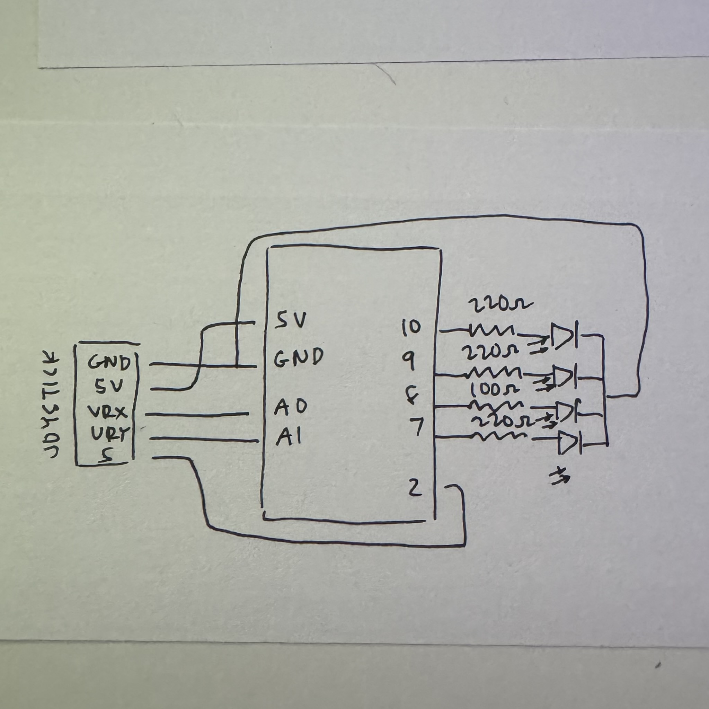
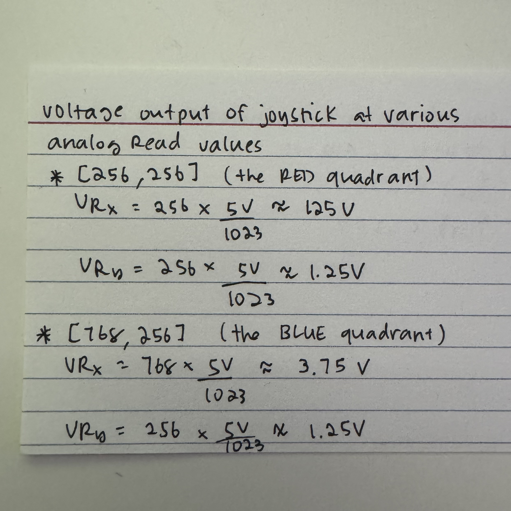
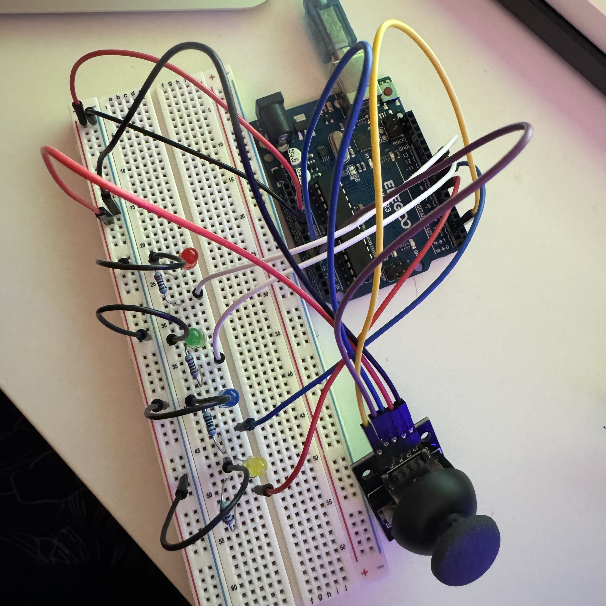

Assignment 6 had us create a webpage using p5.js and webserial that
allows communication between the web and our Arduino. In my program,
I created a light blue canvas and equipped it with a shape (acting
like a cursor). With a joystick, I can move around the cursor and light
up various LEDs based on which quadrant of the canvas the cursor is on.
Schematic

On the left is the schematic that represents my assignment. I used
an 2 input devices (the joystick consists of two potentiomenters) and
4 output LEDs. The LED colors I used were red, green, blue, and yellow.
To apply appropriate resistance to all LEDs, I used a 220Ω resistor
for the red, green, and yellow LEDs and a 100Ω resistor for the blue
LED.
Calculations

Here are a few sample calculations of the voltage output at various
analogRead values. The first calculation is when analogRead reads
[256, 256], which would be when the joystick is at the approximate center
of the RED quadrant on the webpage. The second calculation is when
analogRead reads [768, 256], which would be when the joystick is at the
approximate center of the BLUE quandrant on the webpage. It is worth noting
that in javaScript code, the analogRead values for the x and y axes were
mapped to be within the size of the canvas (512x512).
Circuit

The circuit for my program is relatively simple. My two output devices
were the joystick, which consists of two potentiomenters. To read the
x and y position of my joystick, I connected the joystick's VRx and VRy
to analog pins A0 and A1, respectively. The input devices were the 4
different colored LEDs, which were connected to digital pins 7-10.
p5.js Code
/* establishing the signal changes per second */
const BAUD_RATE = 9600;
/* setting variables for the port and connect button */
let port, connectBtn;
/* set-up method */
function setup() {
/* initializing serial */
setupSerial();
/* creates a canvas that is 512x512 */
createCanvas(512, 512);
}
/* method for drawing on the canvas and writing to Arduino */
function draw() {
/* checks if the port is open */
const portIsOpen = checkPort();
if (!portIsOpen) return;
/* read from the port until there is a new line */
let str = port.readUntil("\n");
/* return nothing if there is nothing read in the port */
if (str.length == 0) return;
/* splits and trims the array by its commas */
let sensors = str.trim().split(",");
/* mapping the x and y positions to fit the dimensions of
the canvas */
const x = round(map(Number(sensors[0]), 0, 1023, 0, 512));
const y = round(map(Number(sensors[1]), 0, 1023, 0, 512));
/* setting the background color to light blue */
background('lightblue');
/* if the x and y coordinates are between 0 and 255 */
if(x <= 255 && y <= 255) {
/* fill a red rectangle into the following coordinates */
fill('red');
rect(0, 0, 255, 255);
/* and send a 0 to the Arduino */
port.write(0);
/* if the x-coordinate is between 255 and 512 and the
y-coordinate is between 0 and 255 */
} else if(x >= 255 && x <= 512
&& y > 0 && y <= 255) {
/* fill a blue rectangle into the following coordinates */
fill('blue');
rect(255, 0, 255, 255);
/* and send a 1 to the Arduino */
port.write(1);
/* if the x-coordinate is 255 or more and the y-coordinate
is between 255 and 512 */
} else if(x <= 255 && y >= 255
&& y <= 512) {
/* fill a green rectangle into the following coordinates */
fill('green');
rect(0, 255, 255, 255);
/* and send a 2 to the Arduino */
port.write(2);
} else{
/* fill an orange rectangle into the following coordinates */
fill('orange');
rect(255, 255, 255, 255);
/* and send a 3 to the Arduino */
port.write(3);
}
/* creates a white circle following the x and y coordinates */
fill('white');
circle(x, y, 30);
}
// Three helper functions for managing the serial connection.
function setupSerial() {
port = createSerial();
// Check to see if there are any ports we have used previously
let usedPorts = usedSerialPorts();
if (usedPorts.length > 0) {
// If there are ports we've used, open the first one
port.open(usedPorts[0], BAUD_RATE);
}
// create a connect button
connectBtn = createButton("Connect to Arduino");
connectBtn.position(5, 5); // Position the button in the top left of the screen.
connectBtn.mouseClicked(onConnectButtonClicked); // When the button is clicked, run the onConnectButtonClicked function
}
function checkPort() {
if (!port.opened()) {
// If the port is not open, change button text
connectBtn.html("Connect to Arduino");
// Set background to gray
background("gray");
return false;
} else {
// Otherwise we are connected
connectBtn.html("Disconnect");
return true;
}
}
function onConnectButtonClicked() {
// When the connect button is clicked
if (!port.opened()) {
// If the port is not opened, we open it
port.open(BAUD_RATE);
} else {
// Otherwise, we close it!
port.close();
}
}
Arduino IDE Code
const int red = 10; /* sets the red LED to pin 10 */
const int green = 9; /* sets the green LED to pin 9 */
const int blue = 8; /* sets the blue LED to pin 8 */
const int yellow = 7; /* sets the yellow LED to pin 7 */
int inByte; /* variable for incoming messages from p5 code */
/* set-up method */
void setup() {
/* setting each LED pin to output */
pinMode(red, OUTPUT);
pinMode(green, OUTPUT);
pinMode(blue, OUTPUT);
pinMode(yellow, OUTPUT);
/* start serial */
Serial.begin(9600);
}
/* loop method that will run indefinitely */
void loop() {
/* send the x-position value to serial */
Serial.print(analogRead(A0));
Serial.print(","); /* separate x and y values by commas */
/* send the y-position value to serial */
Serial.println(analogRead(A1));
/* delay code by 50 ms */
delay(50);
/* if there is incoming serial data */
if (Serial.available() > 0) {
/* read serial data and apply to inByte variable */
inByte = Serial.read();
/* if inByte is 0 */
if (inByte == 0) {
/* set the red LED to high and the rest to low */
digitalWrite(red, HIGH);
digitalWrite(blue, LOW);
digitalWrite(green, LOW);
digitalWrite(yellow, LOW);
}
/* if inByte is 1 */
if (inByte == 1) {
/* set the blue LED to high and the rest to low */
digitalWrite(blue, HIGH);
digitalWrite(red, LOW);
digitalWrite(green, LOW);
digitalWrite(yellow, LOW);
}
/* if inByte is 2 */
if (inByte == 2) {
/* set the green LED to high and the rest to low */
digitalWrite(green, HIGH);
digitalWrite(red, LOW);
digitalWrite(blue, LOW);
digitalWrite(yellow, LOW);
}
/* if the inByte is 3 */
if (inByte == 3) {
/* set the yellow LED to high and the rest to low */
digitalWrite(yellow, HIGH);
digitalWrite(red, LOW);
digitalWrite(blue, LOW);
digitalWrite(green, LOW);
}
}
}